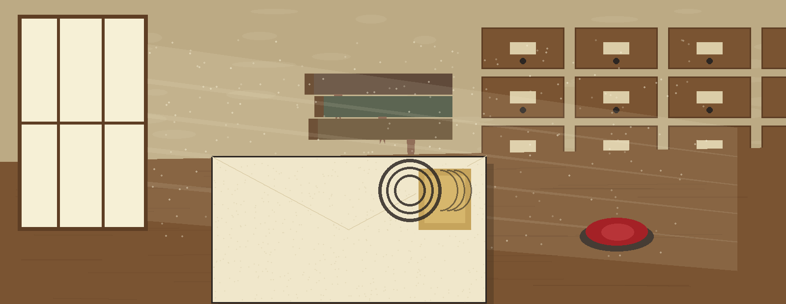
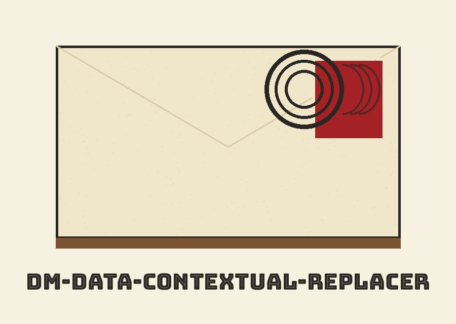
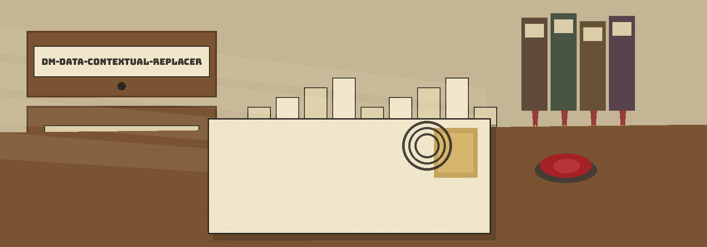
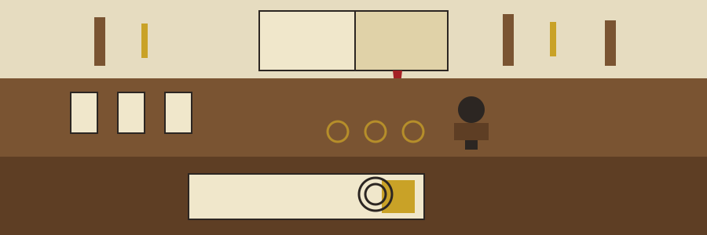

dm-data-contextual-replacer: Postmark Collector's First Day Covers
dm-data-contextual-replacer: Postmark Collector's First Day Covers names itself in that form throughout this page. The page is built as a cabinet: vellum walls, panels a shade deeper in the same vellum, headings in Bungee Inline in iron gall ink, body copy in Cabin in near black, miniature catalogue drawers marking each chapter, and oak trimming panel edges and rules. A sealing wax red dot flags the chapter a visitor is standing in, that chapter only, starting with plate one below.



Nearness Decides
Punctuation Stays
Nothing Replaced Means Exit 1
A Random Float When No Value Is Given

Plate one: the job, bluntly
Read the words surrounding a numeral. A keyword from the caller's list inside the window: swap the numeral out for a masked value. No listed keyword nearby: leave it standing. The list is mandatory and the caller writes it. Salary or income sitting within N words of a numeral marks that numeral for exchange, exactly as the README frames it. The tool sits with a family of tools that fabricate or mask sensitive data, plausible on the surface, empty underneath.
Plate two: acquisition
git clone https://github.com/ShadowGuardAI/dm-data-contextual-replacer
Marginal note, flagged as a fault and not corrected in the line above: the organisation inside that URL is spelled without its hyphen. The welded form is ShadowGuardAI. Properly the organisation carries a hyphen: ShadowGuard-AI. Tally across the whole live README: the welded form turns up twice, clone line once, licence line once. The hyphenated form turns up never.
Plate three: invocation
./dm-data-contextual-replacer [params]
Footnote A, at full type size: punctuation riding on a qualifying number rides on through. A number with punctuation attached, such as [PLACEHOLDER NUMBER], beside a keyword, is masked and the punctuation is kept in the output. Footnote B, at full type size: replace nothing and the run says so, printing No values were replaced. and departing at exit 1. Where the README punctuation illustration used a real numeral, this plate shows a placeholder token, under the redaction flag recorded in the final record section.
Plate four: the dials
| -h | Show help message and exit |
| --input | The input text to process. Text, mark that. Not a pathname. |
| --keywords | Comma-separated list of contextual keywords. |
| --window_size | The number of words to check around the target (default: 10). |
| --replacement_value | The value to replace matched data with. If not provided, a random float is generated. |
| --faker_locale | The Faker locale to use for generating replacement values (default: en_US). |
| --log_level | Set the logging level (default: INFO). |

Plate five: honest absences
Nobody documented an output dial, so this site invents no destination for results. Nobody documented a file to read from, and the input dial takes raw text. Nobody documented a seed, so the random float must never be sold as reproducible. Nobody documented what happens when a window straddles a full stop, so this site stays silent there too. Beyond the punctuation illustration, no demonstration command, no specimen passage, and no specimen result appears anywhere in the README.
Plate six: rights
Copyright (c) ShadowGuardAI
The line above is the README licence line exactly as printed, fault included: the welded organisation form again, with no year attached and nobody named. Alongside, kept separate, the LICENSE particulars: the file holds the MIT License; its holder is rendered as a pen name, then the leftover part of the name cut down to one initial, then @Epsilon0xCell; the span is 2025-2026. That initial stays unexpanded here, and the holder line is not reproduced. The two wordings diverge in shape, and the divergence stays on the page exactly as discovered.
Defects and limits, on the record
Counting is not this program's habit: it measures word distance and swaps numerals, and tallies nothing. Where swapped results go is undocumented. Whether a run can be repeated is undocumented, and no seed exists. What an invocation looks like beyond name plus [params] is undocumented, and what a keyword list looks like typed by an actual caller is undocumented. This site fills none of those silences by guessing.
The preserved README record
What follows is the live README, transcribed whole in one grip. One substitution only: the concrete numeral inside the usage footnote becomes a placeholder token, under the redaction flag, so the actual figure appears nowhere on this site. All remaining lines travel unchanged.
 # dm-data-contextual-replacer Replaces data based on contextual keywords identified nearby. For instance, if 'salary' or 'income' appears within N words of a number, replace the number with a masked value. Requires a pre-defined list of contextual keywords. - Focused on Tools designed to generate or mask sensitive data with realistic-looking but meaningless values ## Install `git clone https://github.com/ShadowGuardAI/dm-data-contextual-replacer` ## Usage `./dm-data-contextual-replacer [params]` A number with punctuation attached, such as `[PLACEHOLDER NUMBER],` beside a keyword, is masked and the punctuation is kept in the output. When no value is replaced, the run prints `No values were replaced.` and exits 1. ## Parameters - `-h`: Show help message and exit - `--input`: The input text to process. - `--keywords`: Comma-separated list of contextual keywords. - `--window_size`: The number of words to check around the target (default: 10). - `--replacement_value`: The value to replace matched data with. If not provided, a random float is generated. - `--faker_locale`: The Faker locale to use for generating replacement values (default: en_US). - `--log_level`: Set the logging level (default: INFO). ## License Copyright (c) ShadowGuardAI